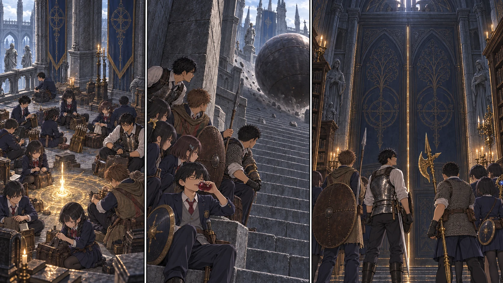

DAY51 / TURN1−61
扉の向こうで、子守歌がする。

先生「ここから先は、一人が全部引き受ける戦いにはしない」
【DAY51・朝｜昨日の失敗を持っていく】赤月のない窓が、かえって落ち着かなかった。先生は昨夜の撤退を書いた紙を畳む。閉じた教室が開き、知っているはずの道から敵が来た。その事実だけは忘れない。矢を百本買い足し、四人へ二十五本ずつ渡す。戻って来た人間が、持っている道具を数え直す朝だった。
【討論室｜使える帰り道】学び舎に戻った十三人は、二人の術師を距離を取って排除し、赤狼のいなくなった広間へ進む。紬が後ろを確認してから、先生が祝福に触れた。全員が順に光へ手を添える。ここまで来ていない教会の二十人まで転送登録されたわけではない。それでも、今ここにいる十三人には、もう一つ帰れる場所ができた。
休息を終えると、千夏が矢筒を閉じた。「撃てる数と、撃っていい数、違うんですね」花は短くうなずき、退路側へ顔を向ける。椅子の並ぶ広間に人の声は戻ったが、明るく騒ぐ者はいなかった。昨夜、扉の向こうで揃って響いた靴音を、みんな覚えていた。
【鉄球｜十三回、待つ】石を削る轟音が降ってきた。陸が指を折り、蓮が一人ずつ合図を送る。先生は盾を上げて受けるなと念を押した。重さが違いすぎる。遮蔽から遮蔽へ、一人渡ってから次の一人。途中、陸が身を伏せた際に石の縁で擦った。赤い瓶を一つ使い、痛みが引くのを確かめてから戻る。「今の間隔、少し長く取ろう」。失敗を隠さず、次の合図を変えた。
【騎士｜盾を見て、待つ】脇の扉を開くと、遠回りの階段を使わず引き返せる道がつながった。その先に、青銀の盾を持つ騎士がいた。ムーングラム。先生は剣を振り込まず、相手の間合いの端に立つ。陽太にも待てと手を出した。こちらの焦りを、あの盾は待っている。
花と千夏の物理の矢が、騎士の向きを変える。盾から杖へ持ち替えた瞬間、陽太の槍が踏み込みを止め、大地が両手の黄金ハルバードを振り下ろした。健太と直人は退路を塞がず、前へ出た二人が下がれる幅を残す。先生だけが囮になったのではない。それぞれが、次の一人の一瞬を作った。騎士が倒れると、誰も追撃の声を上げなかった。
回収したカーリアの騎士盾は共同の荷に収める。誰が使うかは、まだ決めない。昇降機がゆっくり上がる間、悠は杖を握り直し、拓海は自分の足元を見ていた。先読みは道を示す。それでも、この沈黙の長さまでは教えてくれない。
【円卓の回想】先生は、以前円卓でギデオンに聞いた話を思い返した。レナラは女王だが、デミゴッドではない。大ルーンは、彼女が抱く琥珀の卵にあるという。そんな言葉の区別を、今までは攻略の手掛かりとして聞いていた。扉を前にすると、そこに座っている誰かの人生を切り分けるようにも聞こえた。
【大書庫前・14:30】大扉の隙間から、蝋燭の光が細く落ちる。高く積まれた本と、奥へ続く影。かすかな歌のような音に、紬が顔を上げた。美しい建物に、安心できる場所があるとは限らない。先生は取っ手に手を掛けず、十三人の顔を順に見た。大技は各班が避ける。召喚の呼び声がしたら攻撃を止め、互いの逃げ道を塞がずに離れる。追うのは本体だけだ。レナラとの戦いは、まだ始めていない。
【同じ午前・教会】結衣のところには、鹿二頭と取水二便の報告が届いていた。航と亮が使った矢は二本ずつ。二十四食分の肉に購入した九食を足し、当番を交代して配給する。楓と誠は補修材を数え、颯は戦闘に戻らず作業の記録を手伝う。前へ進む十三人と、帰る場所を保つ二十人。別々の仕事が、同じ一日の下にあった。
【判定記録】天候3+3=6／討論室到達6+2+3=11／鉄球2+2+3=7／ムーングラム5+6+3=14／基地5+3+3=11。条件を保存してから各一度だけ抽選。陸の擦過傷は赤一回で回復、新死亡なし。ルーン2601、矢294、飲用1.5L。
今回の判定記録
| 判定 | 出目 | 補正 | 合計 |
|---|
| weather | 3+3 | 0 | 6 |
| supply-route | 6+2 | 3 | 11 |
| ironball | 2+2 | 3 | 7 |
| moongrum | 5+6 | 3 | 14 |
| base | 5+3 | 3 | 11 |
抽選前の条件 · 抽選結果